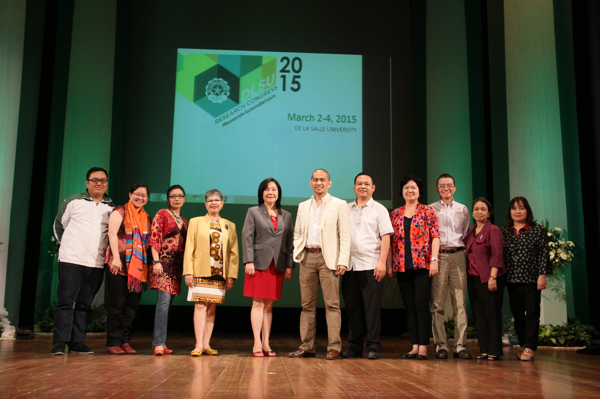

De La Salle Manila
De La Salle Manila
STEM
Science, Technology, and Engineering
STEM is part of the kinder-to-Twelve Curriculum of the Philippines’ Department of Education aiming to make the students more Globally competitive and to ready them to the work in their specific fields. STEM focuses in four specific disciplines: Science, Technology, Engineering, and Mathematics in an interdisciplinary approach. Other than teaching these four disciplines separately, STEM Strand creates a cohesive learning environment based on actual applications. Therefore, readying the students for work in the actual world.
World-Class Facilities
The STEM Strand holds the biggest number of the DLSU Senior High School Students. All the students under STEM are guaranteed with world class equipment and facilities. DLSU has various computer laboratories for the use of the students to develop their computer literacy and prepare for technology related courses under the College of Computer Sciences. They are taught different computer skills like programming, website development, and application development. DLSU also has laboratories fully equipped with all the equipment and facilities that STEM students need with conducting experiments under biology, chemistry and physics. The students have access to top notch equipments that are useful for them to fully understand the topics.
The STEM Strand holds the biggest number of the DLSU Senior High School Students. All the students under STEM are guaranteed with world class equipment and facilities. DLSU has various computer laboratories for the use of the students to develop their computer literacy and prepare for technology related courses under the College of Computer Sciences. They are taught different computer skills like programming, website development, and application development. DLSU also has laboratories fully equipped with all the equipment and facilities that STEM students need with conducting experiments under biology, chemistry and physics. The students have access to top notch equipments that are useful for them to fully understand the topics.

High-Caliber ProfessorsDLSU assures the quality learning of all the STEM students by having/hiring only the best teachers in the country. DLSU has high standards when it comes to theirs educators. All of the professors in DLSU must have already finished their Masters and Doctorate degrees before they are allowed to teach the students. In such way, the students are sure to acquire information from the most experienced and the most knowledgeable on their specific fields.
Blended Learning
What separates STEM from the usual Math and Science education is the use of Blended Learning approach. It helps the student learn computational thinking skills which focuses on the real world applications of problem solving.
DLSU uses the Blended Learning approach to the education of their students bridging the gap between the traditional mode of teaching writing and the pedagogical potentials of technology integration in the language classroom. STEM students in DLSU will not just stay in the classrooms and listen to their professors all day long. The students are immersed to the actual environment and are taught using various interactional methods. The students are subjected to activities like Group reports, panel discussions, seminars and many other activities.
What separates STEM from the usual Math and Science education is the use of Blended Learning approach. It helps the student learn computational thinking skills which focuses on the real world applications of problem solving.
DLSU uses the Blended Learning approach to the education of their students bridging the gap between the traditional mode of teaching writing and the pedagogical potentials of technology integration in the language classroom. STEM students in DLSU will not just stay in the classrooms and listen to their professors all day long. The students are immersed to the actual environment and are taught using various interactional methods. The students are subjected to activities like Group reports, panel discussions, seminars and many other activities.